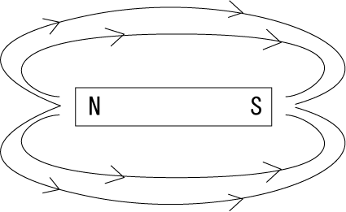
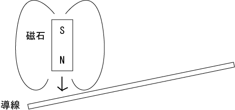
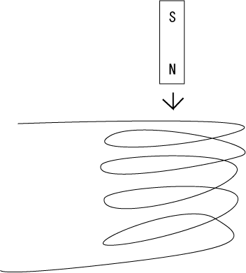
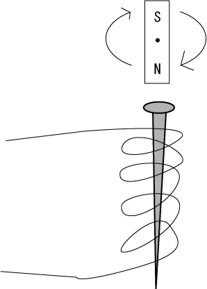
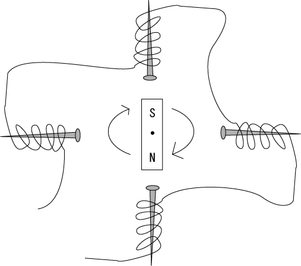

発電機の世界観です。
機械に詳しい父親の話を参考にしています。
電流の流れ方には、直流と交流がある。
たとえば、水流の場合。水は、上から下へと一方向に流れる。これは電池も同じで、電流は+から-へと一方向に流れる（電子の流れは-から+だが、電流の流れは+から-）。
これは、川が上流から下流へと一方向に流れるのと同じ。
このように、流れが一方向の電流の流れのことを、直流（DC）という。電池の場合は直流である。
これに対して、海の寄せては返す波のように、「行ったり来たりを繰り返す電流の流れ」がある。これを交流（AC）と呼ぶ。そして、原理上、発電機は交流であり、家庭に届けられる電気も交流である。
家庭に届く電気は交流だが、パソコンなど電気機械の多くは直流で動いている。このため、ACアダプターと呼ばれる、ACの電流をDCに変換する装置が必要となることがある。
発電機の仕組みを考えるためには、電磁誘導を考えなければならない。
電磁誘導とは、電流から磁界を発生させたり、磁界から電流を発生させることのできる現象のこと。
磁石の周りの空間には、以下のような目に見えない磁界が発生する。

磁界を表現したこのような図（モデル）の中で、周りの線のことを磁力線と言う。
磁石にはN極とS極があり、同じ極同士は反発し、違う曲同士は引き合うという性質がある。
また、地球も巨大な磁石であり、地球の周りには磁界がある。コンパス（羅針盤）を使うことで、北と南がどの方角なのかを知ることができる。
また、磁石に鉄の釘のような鉄でできたものをくっつけると、釘は磁石の性質を持つ。鉄が磁界の流れを通し、磁石の性質を働かせるようになるのである。鉄の釘のように、磁石の性質を持った物質を「磁性体」と呼ぶ。
次に、導線に対して以下のように磁石を近づけて、導線の周囲の磁界の強さを変化させてみる。

このようにすると、なんと導線に電流が流れる。これを電磁誘導と言う。
電磁誘導とは、「導線の周囲の磁界の強さが変化すると、導線に電流が発生する」というものである。
電磁誘導に関して、「フレミングの法則」と呼ばれる法則がある。フレミングの法則は、よく知られている「左手の法則」と「右手の法則」がある。
| 法則 | 意味 |
|---|---|
| 左手の法則 | 磁界によって電流を生み出す時の法則。 磁界と導線が直角であった時、それぞれ直角に指した左手の中指が電流(I)、人差し指が磁力(B)、親指が力(f)の方向となる。 それぞれの頭を取って「電磁力」と覚える。 |
| 右手の法則 | コイルに発生する起電力（たとえばモーター）の法則。 右手の中指が電流、人差し指が磁力、親指が力の方向となる。右手と左手が違うだけで指は同じ。 |
この法則を用いて、導線に磁石を近づけたり離したりすることで、発電機を作ることができる。この「近づけたり離したり」という動作が繰り返し行われることが、発電機が交流になった理由である。
さて、このように電磁誘導が理解できたところで、電力を連続させて、大きく使うためにはどうするか。
まず、以下のように、導線をくるくると巻いて、その中に磁石を入れたり出したりする仕組みを考えた。この時、導線をくるくると巻いたものをコイルと呼ぶ。

このようにすることで、磁界の強さがたくさんの導線で一度に変えられ、電流が大きく流れるし、入れたり出したりすることで連続して電流を発生させられる。
しかしながら、「入れたり出したり」といった方式は少し面倒であり、手間がかかる。
そして、磁性体の周りにコイルを巻いて、磁石を回転させる仕組みを考えた。

これなら、回転させるだけで、たくさんの電力を発生させることができる。
実際の発電機では、磁石の周りにたくさんのコイルをつけ、磁石を中心で回転させるなどして、より効率的に発電を行うようになっている。

発電機を発明したのはエジソン（GE社、ゼネラル・エレクトリック社）だが、当時はシーメンス社など同じように発電機を発明しようとする多くの発明家や会社があった。
ちなみに、日本では、関東と関西で別々の会社から発電システムを輸入したため、東日本と西日本で50Hzと60Hzの違いが生まれてしまった。東京（関東）の電力会社はドイツから50Hzの発電機を、大阪（関西）の電力会社はアメリカから60Hzの発電機を輸入した。
2025.05.04編集
発電機の注意点として、燃料を入れっぱなしにすることはNG。燃料が劣化して発電機が動かなくなったり、火災の原因になったりします。使用後は燃料を使い切ってから保管するようにしよう。
2025.05.04
電磁気学も参照のこと。
エジソンについては科学者・科学史も参照のこと。